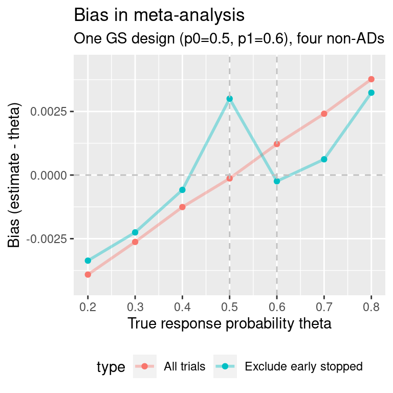
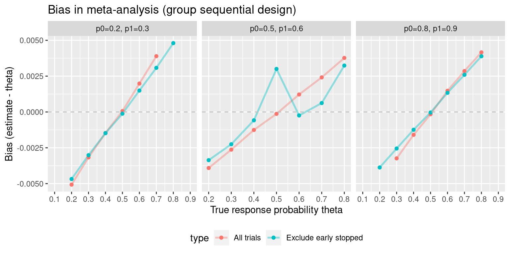

Meta Analysis: Group Sequential
MA_GS.RmdFind a GS design with p0=0.5, p1=0.6, type-I error-rate 0.1, power 0.8:
gs.des <- curtailment::singlearmDesign(nmin=50,
nmax=140,
C=20,
minstop=40,
p0=0.5,
p1=0.6,
alpha=0.1,
power=0.8,
minthetaE=1,
maxthetaF=0,
max.combns=1e3)
# Obtain stopping bounds:
bounds <- curtailment::drawDiagram(gs.des)Now simulate meta-analyses of a single GS design and some number of single-arm single-stage trials with the same maximum sample size N as the GS design. We also choose the true response probability theta.
set.seed(1453)
ma.gs.results <- maGS(theta=0.5,
des=gs.des,
bounds=bounds,
nsims=1e5,
n.studies=4)
ma.gs.results
#> reps mean.studies bias mean.se theta
#> All trials 1e+05 5.00000 -0.0001693598 0.01923430 0.5
#> Exclude early stopped 1e+05 4.60942 0.0029390552 0.01960456 0.5
#> type
#> All trials All trials
#> Exclude early stopped Exclude early stoppedWhat does the bias look like as theta is varied?
theta.vec.0.5 <- seq(0.2, 0.8, 0.1)
ma.gs.results0 <- vector("list", length(theta.vec.0.5))
for(i in 1:length(theta.vec.0.5)){
ma.gs.results0[[i]] <- pwb::maGS(theta=theta.vec.0.5[i],
des=gs.des,
bounds=bounds,
nsims=1e5,
n.studies=4)
}
ma.gs.results0 <- do.call(rbind, ma.gs.results0)
ma.gs.results0$p0p1 <- "p0=0.5, p1=0.6"
p0=0.8
As with the single Simon design, let us examine what happens when the response rate is not close to 0.5. Here, we obtain a GS design for p0=0.8, p1=0.9. We reduce type-I error-rate to 0.05 and increase power to 90% to increase the maximum sample size and number of interim analysis, both of which would be otherwise reduced by the high anticipated response rates.
gs.des2 <- curtailment::singlearmDesign(nmin=50,
nmax=140,
C=20,
minstop=40,
p0=0.8,
p1=0.9,
alpha=0.05,
power=0.9,
minthetaE=1,
maxthetaF=0,
max.combns=1e3)
# Obtain stopping bounds:
bounds2 <- curtailment::drawDiagram(gs.des2)Again, simulate meta-analyses of this group sequential design and single-arm single-stage trials with the same maximum sample size N as the group sequential design:
theta.vec <- seq(0.1, 0.9, 0.1)
ma.gs.results2 <- vector("list", length(theta.vec))
for(i in 1:length(theta.vec)){
ma.gs.results2[[i]] <- pwb::maGS(theta=theta.vec[i],
des=gs.des2,
bounds=bounds2,
nsims=1e5,
n.studies=4)
}
ma.gs.results2 <- do.call(rbind, ma.gs.results2)
ma.gs.results2$p0p1 <- "p0=0.8, p1=0.9"#> Warning: Removed 5 row(s) containing missing values (geom_path).
#> Warning: Removed 5 rows containing missing values (geom_point).p0=0.2
Obtain a GS design for p0=0.2, p1=0.3:
gs.des3 <- curtailment::singlearmDesign(nmin=50,
nmax=180,
C=20,
minstop=40,
p0=0.2,
p1=0.3,
alpha=0.1,
power=0.8,
minthetaE=1,
maxthetaF=0,
max.combns=1e3)
# Obtain stopping bounds:
bounds3 <- curtailment::drawDiagram(gs.des3)Again, simulate meta-analyses of this group sequential design and single-arm single-stage trials with the same maximum sample size N as the group sequential design:
theta.vec.low <- seq(0.1, 0.9, 0.1)
ma.gs.results3 <- vector("list", length(theta.vec.low))
for(i in 1:length(theta.vec.low)){
ma.gs.results3[[i]] <- pwb::maGS(theta=theta.vec.low[i],
des=gs.des3,
bounds=bounds3,
nsims=1e5,
n.studies=4)
}
ma.gs.results3 <- do.call(rbind, ma.gs.results3)
ma.gs.results3$p0p1 <- "p0=0.2, p1=0.3"
# Biggest improvement in bias:
max(abs(ma.gs.results3$bias[ma.gs.results3$type=="All trials"])-abs(ma.gs.results3$bias[ma.gs.results3$type=="Exclude early stopped"]))
#> [1] NaN#> Warning: Removed 5 row(s) containing missing values (geom_path).
#> Warning: Removed 5 rows containing missing values (geom_point).#> Warning: Removed 4 row(s) containing missing values (geom_path).
#> Warning: Removed 10 rows containing missing values (geom_point).